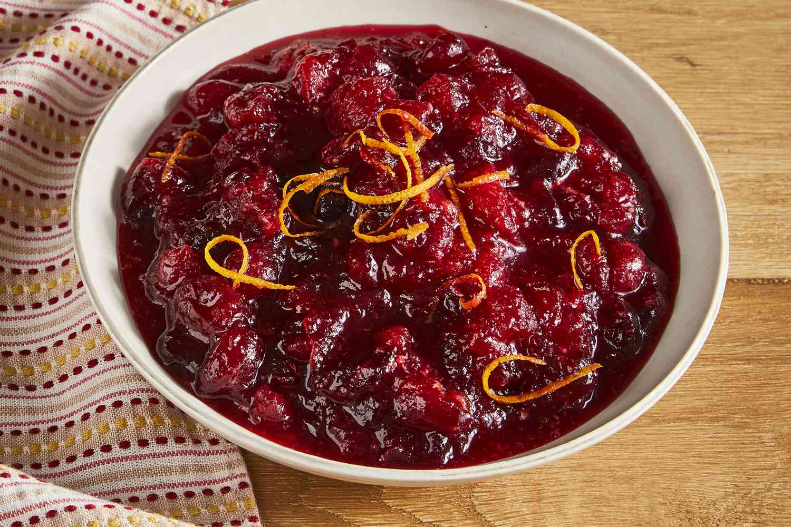

Cranberry sauce

Description
Cranberry sauce is a delicious, tart dessert that goes well on its own or used as a condiment.
Ingredients
- 1 cup of sugar
- 1 cup of water
- 4 cups of fresh or frozen cranberries
- Orange zest
- Cinnamon
- Nutmeg
Steps
- Rinse cranberries under running water and remove discolored or bruised pieces.
- Put the water and sugar in a saucepan on high heat and bring to a boil.
- Add the cranberries to the pot and let simmer over low heat for 10 minutes.
- Stir in orange zest, cinnamon, and nutmeg to taste.
- Let cool to room temperature before serving.